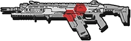
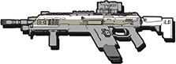
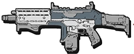
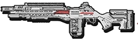
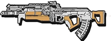
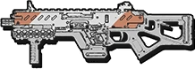
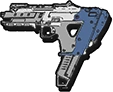
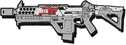
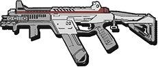

The R-201 Carbine was manufactured by Lastimosa Armory sometime between the Battle of Demeter and Operation: Broadsword to serve as the successor to the R-101C Carbine. Although the R-101C was still utilized by combatants around this time, the newer R-201 became the favored rifle among the Frontier and soon became a standard issue rifle among the Interstellar Manufacturing Corporation and Frontier Militia during the Frontier War.
Fusils d'assaut
R-201

R-101C
The R-101C Carbine was manufactured by Lastimosa Armory. It was the replacement for the older G2A4 Battle Rifle in the hands of the IMC, soon becoming the standard rifle used across the Frontier. Eventually, the rifle would breed three similar weapon systems based off the design - the R-201 Assault Rifle, the D-101 Longbow-DMR , and the R-97 Compact SMG.

Hemlok BF-R

The Hemlok BF-R is a heavy burst-fire assault rifle employed by both IMC and Militia forces fighting on The Frontier. Although not as commonly seen as the more standard R-101C Carbine and R-201 Assault Rifle, the Hemlok is still a relatively common sight amongst the hands of Pilots, Grunts and Spectres alike. Its integrated CPU can fire controlled bursts from two, three, five or to a full magazine dump in one trigger pull.
G2A5
The G2A5 emerges after the Battle of Demeter as a successor to the G2A4. As the previous iteration was popular among pilots who wanted to have more versatility at ranges between the ARs and Snipers, another model was made. The changes made to the weapon have been minor, with upgrades to its rear diopter and ergonomic improvements.

V-47 Flatline

It features a collapsible frame similar to that of the R-101C Carbine and R201 Assault Rifle, most likely to aid with transportation inside Titans and other vehicles. The rifle is commonly seen utilized by Militia Grunts, including those of the 41st Militia Rifle Battalion, as a standard weapon. However, they have also been found in the hands of IMC Marines as well. Instead of having normal up-and-down recoil, it recoils side-to-side.
Mitraillette
Car
The C.A.R. SMG is one of the two submachine guns developed from the R-101C Carbine platform, though unlike the R-97, it has far greater power, able to kill in one less shot at all ranges. Unfortunately, though, this is at the expense of fire rate, range and capacity. This makes the weapon a hybrid between the R-101C Carbine and R-97 Compact SMG, dealing similar damage to the former, with a slower rate of fire than the latter.

Alternateur

The Alternator Submachine Gun (SMG), or simply the Alternator, and non-canonically referred to as the SP-14 Hatchet in concept art, is a twin-barrel submachine gun.The Alternator SMG was first made by Emslie Tactical. This was their first Submachine gun produced, and the only known weapon from the company. While it was the first Submachine gun made by Emslie, it was groundbreaking for its time, as it was the first submachine gun to use more than one barrel to fire.
Volt
The Volt Submachine Gun (SMG), or simply the Volt, is a energy submachine gun featured in Titanfall 2 and Apex Legends. It is a weapon that fires concentrated bolts of high energy, which are referred to as 'blue tracers'.[1] Despite this making the weapon very effective In medium to close range engagements, at long range these blue tracers can very easily give your position away.

R-97 (my beloved)

The R-97 is a compact submachine gun that excels in close-quarters combat due to its high fire rate and magazine size. It has the fastest fire rate out of all primary weapons; this, coupled with its large magazine size make it perfect for clearing entire squads in confined spaces. Despite this, it has very low damage output per shot, taking 5 to 6 shots to take down Pilots. Its very short effective range and high weapon kick make it ill suited for combat beyond the shortest of ranges, although burst firing can improve accuracy.
Mitrailleuse légère
spitfire
The Spitfire LMG has high recoil at first, but it eventually stabilizes into a tighter firing pattern. Due to its unique recoil, players are advised to ignore the traditional method of firing in short bursts, and rather fire in long bursts for increased effectiveness. It boasts extremely high damage for a non-long-range weapon, downing a pilot in no more than 3 shots or 2 headshots. It is one of the most useful guns to use when rodeoing a Titan, as it takes less than one belt to fully destroy it.